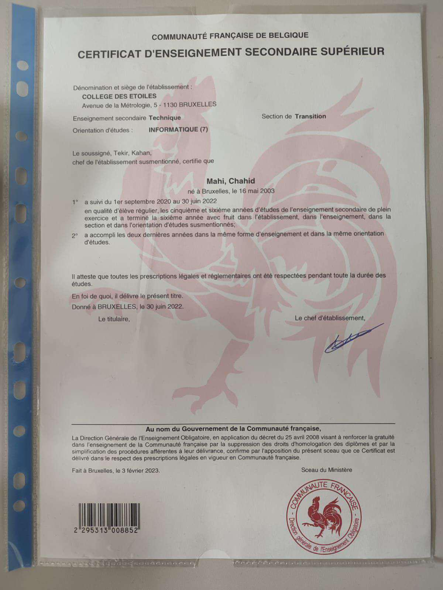

Projets & Réalisations
CESS
Date d'obtention : 2021-2022
üìÑ Certificat : CESS ‚Äì Technique de Transition Informatique
Ce diplôme atteste de mes compétences acquises en technique de transition informatique, validé par le Collège des Étoiles. Au cours de cette année, j'ai développé des compétences fondamentales dans plusieurs domaines clés de l'informatique et des technologies.
Compétences acquises :
- Maîtrise des concepts de programmation et de développement logiciel
- Utilisation des outils de gestion de projets informatiques
- Formation en systèmes d’exploitation (Linux, Windows)
- Initiation à la virtualisation et à la gestion des infrastructures
- Mise en place et gestion de réseaux informatiques et sécurité de base
- Réalisation de projets informatiques en équipe avec des méthodologies agiles
- Développement de jeux et d'applications avec Unity, incluant des projets pratiques et l’utilisation de moteurs de jeu pour des réalisations interactives.
üîß Cette formation m'a permis de poser les bases solides pour continuer √† √©voluer dans le domaine de l'informatique, notamment en cybers√©curit√© et en d√©veloppement.
Pre Security - TryHackMe

Date d'obtention : Avril 2025
üìÑ Certificat : Pre Security ‚Äì TryHackMe
Ce certificat valide les compétences fondamentales en cybersécurité acquises à travers le parcours "Pre Security" sur la plateforme TryHackMe.
Compétences acquises :
- Compréhension des bases du réseau (IP, DNS, HTTP, etc.)
- Utilisation de la ligne de commande (Linux, Bash)
- Gestion des systèmes de fichiers et des permissions
- Notions d’infrastructure informatique et de virtualisation
- Introduction aux concepts clés en cybersécurité (menaces, acteurs, bonnes pratiques)
üîê Ce parcours pose les bases essentielles pour progresser vers l‚Äôanalyse SOC, les CTFs et la Threat Hunting.
Projet 3

Description du projet 3. Ce projet est dédié à...